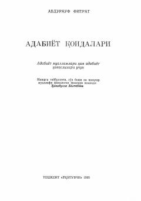

AQAbdurauf Fitratning adabiyot nazoriyati va she'riyat qoidalariga bag'ishlangan mashhur ilmiy qo'llanmasi.
Ushbu asar atoqli olim va yozuvchi Abdurauf Fitrat tomonidan yozilgan bo'lib, adabiyot nazoriyati, she'riyat qoidalari va san'at turlariga bag'ishlangan ilmiy-nazariy qo'llanmadir. Kitobda adabiy jarayonlar, so'z san'ati va o'zbek adabiyotshunosligining muhim masalalari tahlil qilingan. Nashr adabiyot muallimlari, talabalar va ijodkorlar uchun mo'ljallangan.